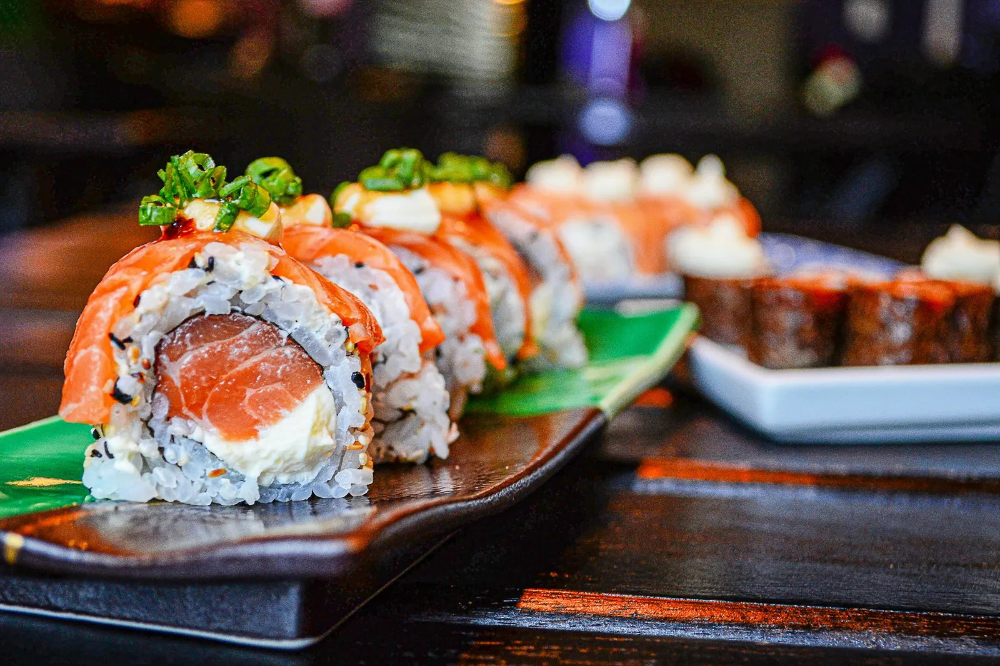
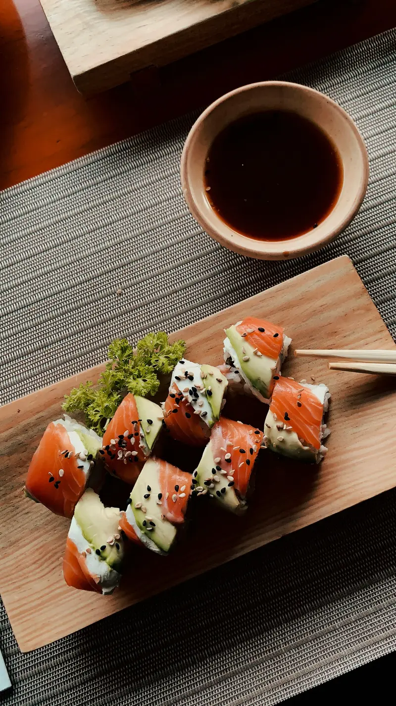
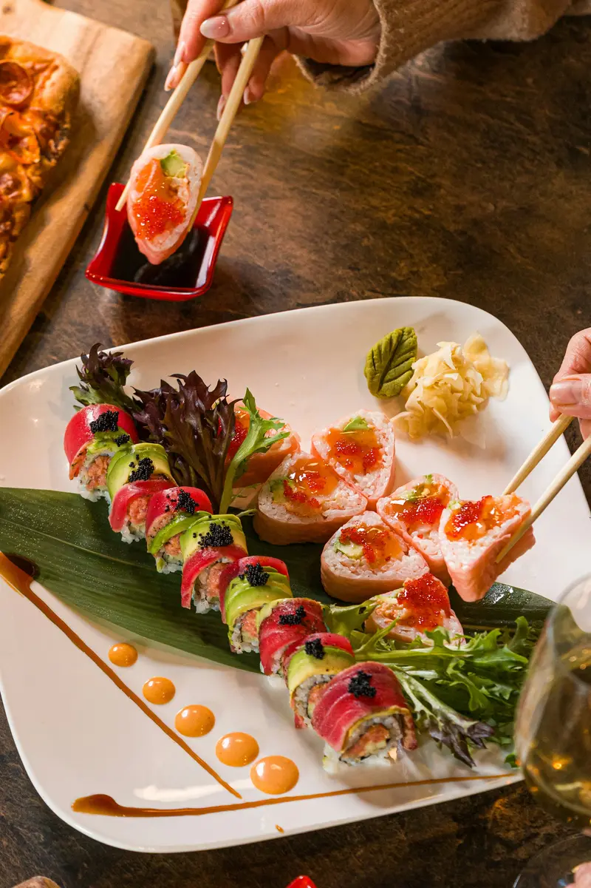
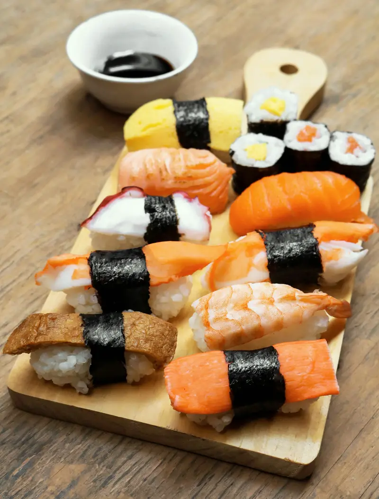

Precise cuts, warm rice.
Fish that arrives early, house-seasoned rice and an eight-seat counter where the itamae decides what comes next.
What comes off the board
A short menu that changes with the sea. Prices are examples: adjust them in the file before publishing.

Combos
- Nori combo20 pieces · nigiri, uramaki and hosomaki of the dayR$ 129
- Chef's combo30 pieces · includes aburi and roe gunkanR$ 189
- All salmon16 pieces · sashimi, nigiri and skin uramakiR$ 92
- Vegetarian14 pieces · shiitake, cucumber, mango and shisoR$ 68
- Boat for two40 pieces · the best of the house in one orderR$ 239
Sashimi
- Salmon8 slices · thick cut, served with fresh wasabiR$ 64
- Tuna6 slices · akami or toro, depending on the deliveryR$ 78
- White fish of the day6 slices · with ponzu and lemon zestR$ 69
- Octopus6 slices · slow-cooked, with coarse saltR$ 72
- House trio12 slices · salmon, tuna and white fishR$ 112
Temaki
- Salmon and chivescrispy seaweed, rolled to orderR$ 38
- Skintoasted salmon skin and tare sauceR$ 34
- Spicy tunachopped tuna, chili and sesameR$ 44
- Crispy shrimppanko shrimp, miso mayoR$ 42
- Vegetariancucumber, mango, carrot and shisoR$ 29
Hot dishes
- Pork gyoza6 pieces · seared on the griddleR$ 39
- Miso soupmiso broth, tofu and scallionsR$ 16
- Griddled squidbutter, soy sauce and lemonR$ 58
- Robata salmoncharcoal-grilled with house tareR$ 74
- Shimeji fried riceegg, scallions and sesame oilR$ 46
Sample prices and dishes. Ask the team about allergens.
You sit down.
The chef chooses.
Omakase means “I'll leave it to you”. It's 14 courses served piece by piece, by hand, at the pace of the conversation.

- 01–02Seasonal cold starters
- 03–04Sashimi of the day, cut in front of you
- 05–12Eight nigiri, from the leanest fish to the richest
- 13Chef's temaki, handed to you
- 14Dessert and green tea
Tuesday to Saturday. Let us know about dietary restrictions when booking.
The counter comes to you.
We assemble everything when you order, never before. Rice and fish travel separately from the sauce, so they arrive just as they left the board.
- 40–55 minaverage delivery time
- 6 kmradius from the restaurant
- 6:30pmwhen we start taking orders


“Sushi is rice. The fish is the part everyone sees.”
Chef Rafael Sato · itamae and co-owner (fictional character)
Nori opened in 2016 with an eight-seat counter and no rush. Rafael learned the craft in restaurants in Liberdade and Osaka and brought back one simple rule: the rice is seasoned three times a night and always served at body temperature.
The fish arrives early in the morning, from suppliers we know by name. If it isn't good that day, it doesn't make the menu.
- 0seats at the counter
- 0×rice seasoned per night
- 0°shari temperature
A night at Nori
A few photos to work up an appetite. Replace them with your own restaurant's.




A short sake list, served chilled or warm, to go with every course.
12 labelsThose who sit down come back.
Fictional testimonials to show the layout. Replace them with your customers' before publishing.
“We did the omakase for our wedding anniversary. The chef remembered our names all the way to dessert.”
“The delivery arrives with fluffy rice and the sauce on the side. It's like it just left the counter.”
“The white fish nigiri with lemon zest is reason enough to cross the city.”
The red light
stays on.
- Address
- Rua Exemplo, 000 · Vila Madalena, São Paulo · SP
- Contact
- (11) 90000-0000 · @nori.sushibar
- MondayClosed
- Tuesday to Thursday6:30pm – 11:30pm
- Friday6:30pm – 12:30am
- Saturday12pm – 4pm · 6:30pm – 12:30am
- Sunday12pm – 5pm